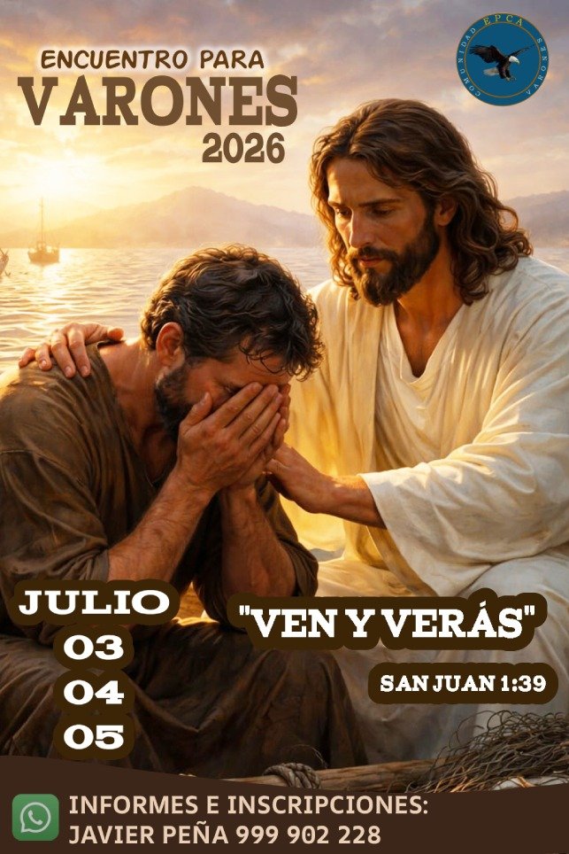

¿Para quién es?
Para varones que quieran acercarse más a Dios y vivir una experiencia espiritual diferente.
Comunidad EPCA — Varones de Cristo Salvador Chama.
¿Quieres experimentar algo nuevo? ¿Cambiar tu corazón? Cristo te espera.
Ver información del retiro
La Comunidad EPCA Varones de Cristo Salvador Chama realizará un retiro espiritual dirigido a quienes desean vivir una experiencia profunda de fe, oración, conversión y encuentro con Dios.
Este retiro es una oportunidad para detenerse, escuchar al Señor y permitir que Cristo renueve el corazón.
Para varones que quieran acercarse más a Dios y vivir una experiencia espiritual diferente.
Momentos de oración, reflexión, fraternidad, enseñanza y encuentro personal con Cristo.
Ven y verás. Cristo puede tocar tu vida, renovar tu fe y transformar tu corazón.
No se trata solo de asistir a una actividad. Se trata de abrirle la puerta al Señor y dejar que Él haga algo nuevo en ti.
Me Interesa El Retiro